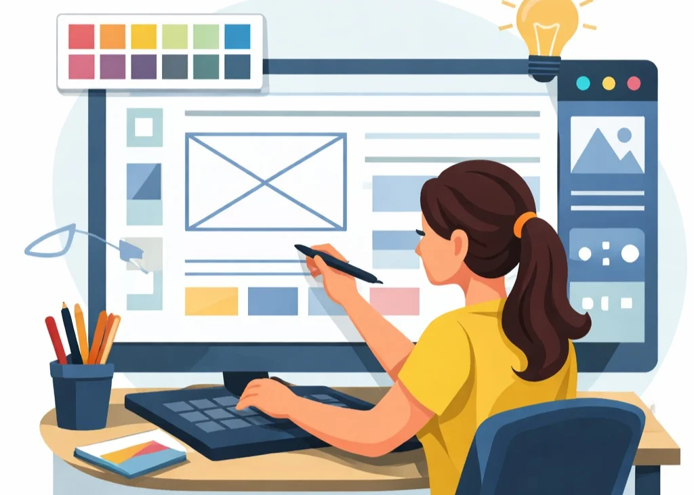
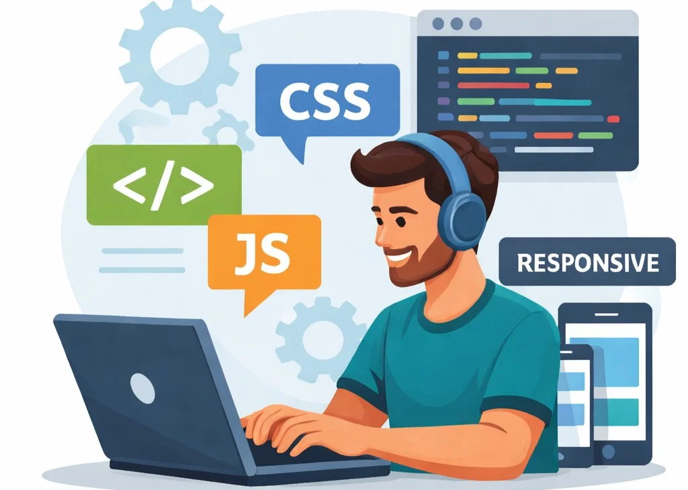

Estudiante de Ingeniería de Sistemas (9.º semestre) y Frontend Developer con enfoque en UI Development y Design-to-Code. Experiencia en creación de interfaces web modernas utilizando HTML5, CSS3 y JavaScript (ES6+), aplicando principios de Responsive Web Design, accesibilidad (WCAG), usabilidad y jerarquía visual.
Capacidad para transformar diseños de Figma en código funcional optimizado para producción, asegurando compatibilidad cross-browser, rendimiento web (Web Performance) y experiencia de usuario consistente en dispositivos móviles y de escritorio. Manejo de control de versiones con Git/GitHub y buenas prácticas de desarrollo frontend.
Habilidades
Mi proceso de trabajo
1. Análisis
Comprensión de objetivos y usuarios.

2. Diseño
Prototipo visual centrado en experiencia.

3. Desarrollo
Implementación optimizada y responsive.